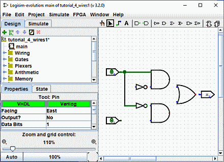
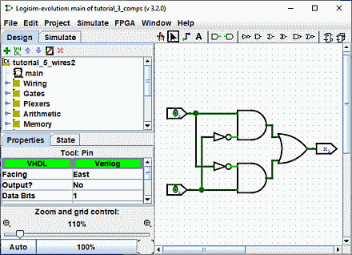

前一步: 第2步：添加导线
第2步：添加导线
在画布上放置好所有元件后，您就可以开始添加导线了。 选择
"Edit"
工具(
 )。 当光标位于接收导线的点上时，将在其周围绘制一个绿色的小圆圈。 按下
left mouse button
，然后将导线拖动到您想要的位置。
)。 当光标位于接收导线的点上时，将在其周围绘制一个绿色的小圆圈。 按下
left mouse button
，然后将导线拖动到您想要的位置。

Logisim-evolution在添加导线时相当智能：只要一根导线在另一根导线上结束，Logisim-evolution就会自动连接它们。 您还可以使用
"Edit"
工具 (
 )。
)。
Logisim-evolution中的导线必须是水平或垂直的。 然后，为了将上部输入连接到非门和与门，我添加了三根不同的导线。

Logisim-evolution自动将导线连接至门以及彼此之间。这包括在上面的 T 交叉点处自动绘制圆圈，表明导线已连接。
当您绘制导线时，您可能会看到一些蓝色或灰色的导线。 Logisim-evolution 中的蓝色表示该点的值“未知”，灰色表示电线未连接到任何东西。 这不是什么大问题，因为您正在构建电路。 但当你完成它时，你的导线都不应该是蓝色或灰色的。 （“或”门未连接的端仍为蓝色：这是没问题的。）
如果所有东西连接了之后，还有一根蓝色或灰色的导线，那么就说明出了问题。 将导线连接到正确的位置非常重要。 Logisim-evolution在元件上绘制小点来指示电线应连接的位置。 当您继续操作时，您会看到这些点从蓝色变成浅绿色或深绿色。
连接完所有导线后，处于连接状态的所有导线本身将呈浅绿色或深绿色。

下一步: 第3步：添加文本